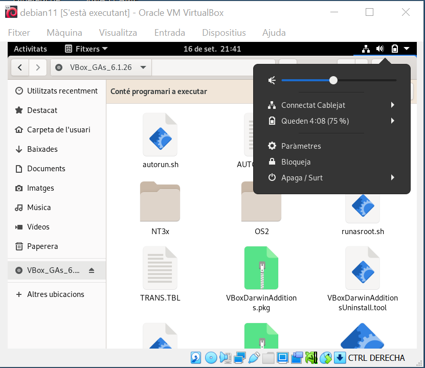
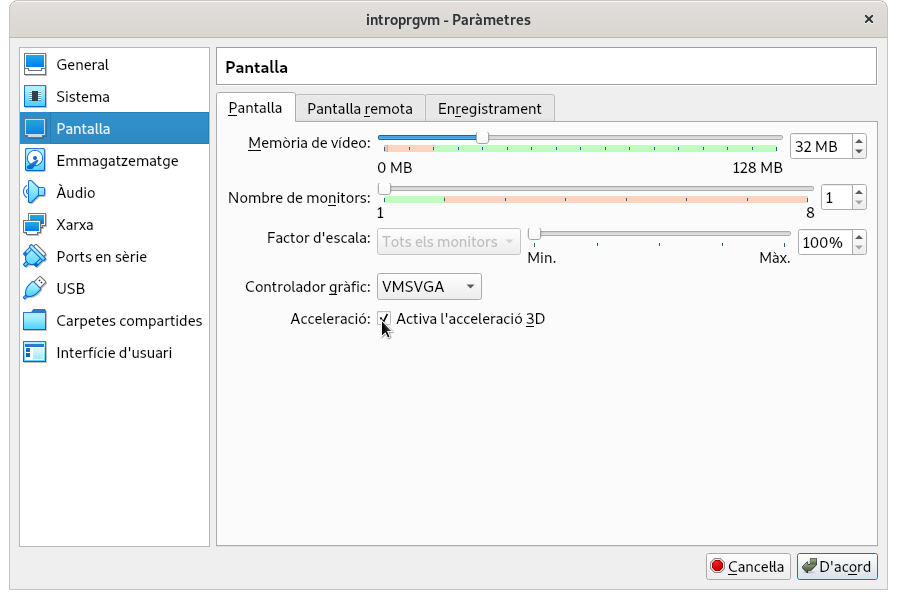
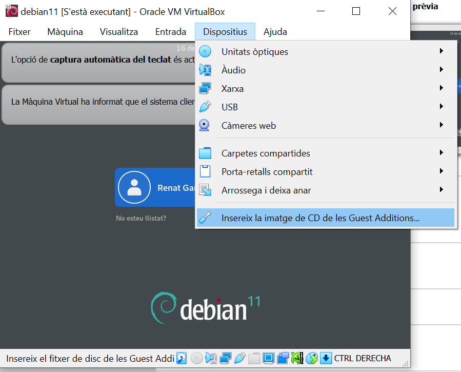
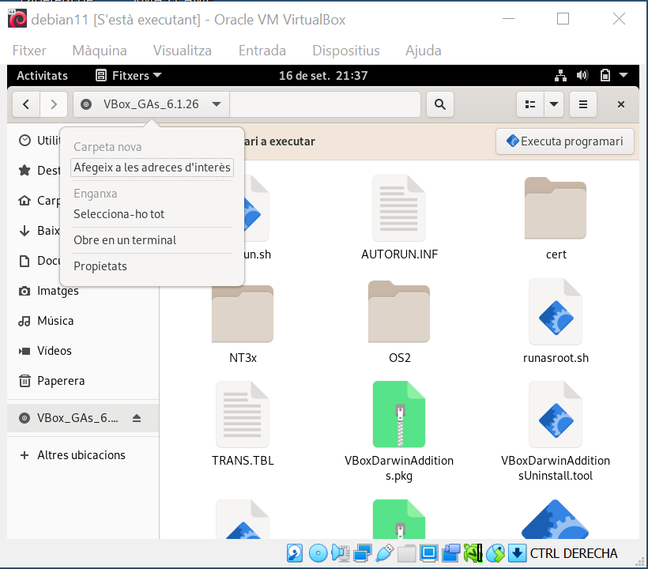
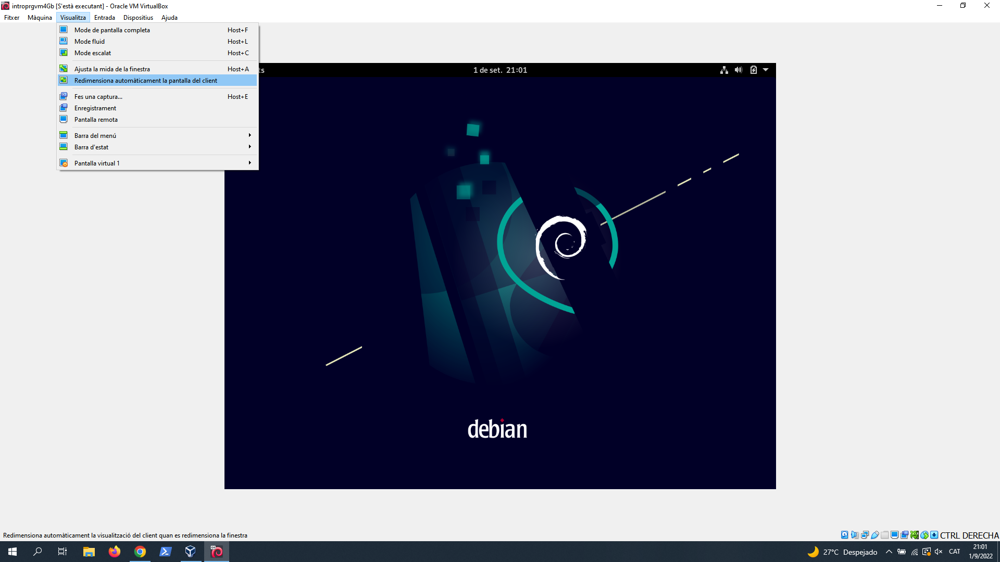
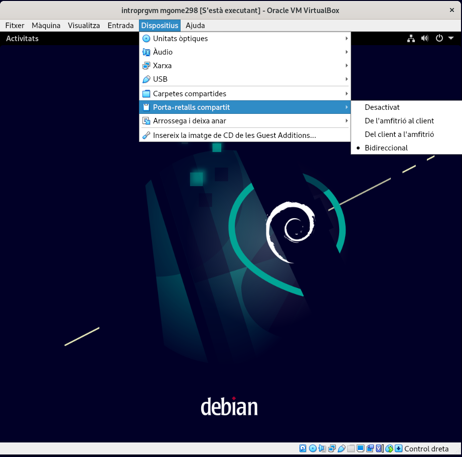

Instal·lació Guest Additions
Ja has instaŀlat VirtualBox i una màquina virtual.
Amb la instaŀlació que tens fins ara, ja podries treballar, però encara ho pots adaptar perquè et sigui més còmode. La finestra segurament et resultarà molt petit i no serà còmode si vols copiar i enganxar elements entre l'anfitrió i la màquina virtual, entre altres coses. Per tot plegat, hi ha el que es coneixen com a guest additions.
Es tracta d'una instaŀlació una mica peculiar, ja que et tocarà fer unes passes que sovint semblaran críptiques. El resultat, però, paga molt la pena. Així, concentrat bé i endavant!
En primer lloc, si tens arrencada la màquina virtual. Apaga-la completament.
Selecciona Paràmetres i al menú lateral selecciona Pantalla:
Assegura't que deixes marcada la casella Activa l'acceleració 3D. A la
captura anterior veuràs que he posat 32MB de memòria de vídeo. És perquè vagi
una mica més fluït.
Arrenca ara la màquina virtual i entra amb el teu usuari i contrasenya.
Al les opcions de la finestra que conté la màquina virtual, selecciona Dispositius → Insereix la imatge de CD de les Guest Additions…
En teoria, en fer això, s'hauria d'obrir el CD i el sistema t'hauria de preguntar si vols executar el CD. Si és així, respon afirmativament. Altrament hauràs d'executar-ho a ma.
Per instaŀlar les guest additions manualment, prem la tecla de finestra al teu teclat i selecciona el navegador de fitxers. Un cop el tinguis, selecciona l'entrada de CD i, a d'alt, prem la fletxeta i selecciona Obre en un terminal
Això farà obrir un terminal on hauràs d'escriure el següent per canviar a l'usuari root:
$ su -
Aquí has d'introduir la contrasenya de root que has escollit en instaŀlar el sistema operatiu.
Un cop hagis introduït correctament aquesta contrasenya, et canviarà el
prompt (de $ passarà a #). Això vol dir que ara tens els privilegis
per administrar el sistema. Farem servir aquests privilegis per instaŀlar
programari que ens falta. Tecleja:
# apt update
# apt upgrade
# apt install dkms build-essential linux-headers-$(uname -r)
# cd /media/cdrom0
# bash VBoxLinuxAdditions.run
Ara toca reiniciar la màquina perquè les addicions tinguin efecte. Et recomano que tanquis també la finestra de la màquina virtual i tornis a arrencar-la des de la consola de VirtualBox. Sí, amb la fletxa verda.
Ara sí que ja està. El teu sistema et permetrà fer coses com copiar i enganxar entre l'amfitrió i la màquina virtual, compartir carpetes, i ampliar la pantalla de la màquina virtual.
Per exemple, per que faci una redimensió automàtica de la pantalla caldrà seleccionar l'opció Visualitza -> Redimensiona automàticament la pantalla del client.
També és fàcil fer que funcioni el copia/enganxa entre els dos sistemes. Només caldrà que l'activis:
Si investigues una mica, segur que trobes altres opcions per fer més còmode l'ús dels teus sistemes.
Gaudeix!